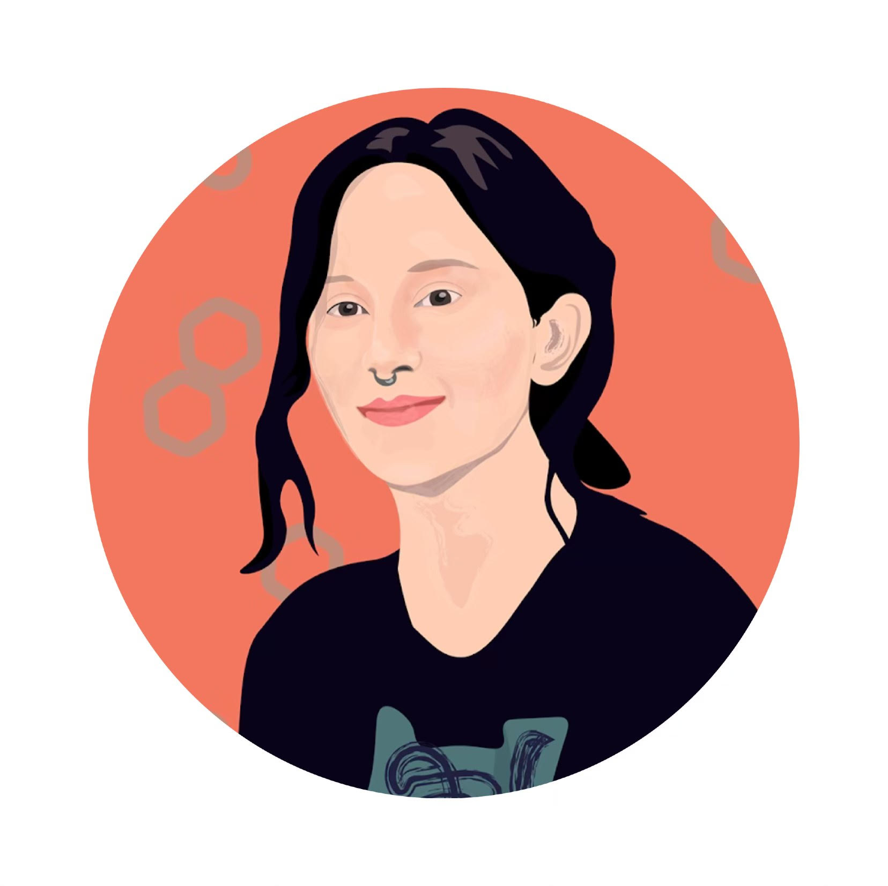

Ana Chkhaidze

Bio
I am a PhD student in Cognitive Science at UC San Diego working with Lera Boroditsky. I'm from Georgia - the country, not the state. I enjoy reading fiction, doing yoga, traveling the world (Italy!). I am fascinated by the influence spaces, and particularly buildings have on humans. I would love to have more time to explore and photograph architecture, but as a great philosopher Mick Jagger once said, “You can’t always get what you want.” You can check out what I've found so far on my Instagram. I also love exploring interesting food and wine scene - after all, I’m from the country with an 8000 year-long tradition of winemaking and no, that’s not a typo.
I have degrees in Social Sciences, Biology and Neurosciences from Free University of Tbilisi, Agricultural University of Georgia, UCSF, and University of Nevada, Reno. Before starting my PhD in Cognitive Science, at different times, I studied schizophrenia, epilepsy, and visual perception, and I worked as a researcher, data scientist, exhibition host, and math teacher.
Research
I’m interested in the interplay between language and mind. How and to what extent do the languages we speak shape our minds and perception? Can there be a language in which quantum physics becomes more accessible? Can we blame our verbs for their lack of responsibility? Using computational and experimental methods, currently I study (1) inner speech, (2) how people understand the complex concept of time in terms of spatial metaphors; (2) how the metaphors we use to discuss complex social issues, such as immigration, influence our attitudes towards these issues.
Travels
2020: CNS, Boston
2019: ECVP, Brussels; BRAINstorming, Tbilisi
Publications
Opposite lateralization patterns for face recognition and gender processing. (In prep).
Ana Chkhaidze, Lars Strother. (2020)
Conferences & Talks
The battle of the hemispheres: opposite lateralization patterns for face recognition and gender processing. (Talk) Cognitive Neuroscience Society Meeting, Boston, MA.
A. Chkhaidze. (2020)
Categorical perception of face identity and gender. (Poster) Cognitive Neuroscience Society Meeting, Boston, MA.
A. Chkhaidze, Matthew Harrison, Zhiheng Zhou, Lars Strother. (2020)
Categorical perception of faces and cerebral laterality. (Poster) The European Conference on Visual Perception, Leuven, Belgium.
A. Chkhaidze, L. Strother. (2019)
A divided visual field approach to the categorical perception of faces. (Talk) BRAINstorming, Tbilisi, Georgia.
A. Chkhaidze. (2019)
Face recognition, linguistic categorization, and laterality. (Poster) Neuroscience Symposium at UNR, Reno, NV.
A. Chkhaidze. (2019)
1st student neuroscience conference in Georgia. (Organizer) Free University of Tbilisi, Georgia.
A. Chkhaidze. (2018)
The Role of Thalamus in Dravet Syndrome. (Talk) BRAINstorming, Tbilisi, Georgia.
A. Chkhaidze. (2017)
Are schizophrenia patients worse performers of dual-tasking? Insights from motor timing. (Poster) The European College of Neuropsychopharmacology Congress, Amsterdam, Netherlands.
M. Malania, E. Chkonia, A. Chkhaidze, A. Kezeli, W. Wolf, M. Sharikadze. (2015)
Teaching
UCSD
COGS 1. Intro to Cognitive Science (Winter 2020)
University of Nevada, Reno
PSY 210. Statistical Methods (Spring 2018)
PSY 301. Experimental Psychology (Fall, Spring 2018-2019)
Free University of Tbilisi
PHYS 406020. Neuroscience (Fall 2017)
PSY 301. Experimental Psychology (Fall, Spring 2018-2019)